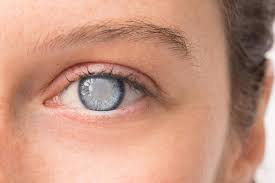
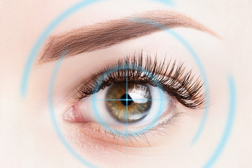
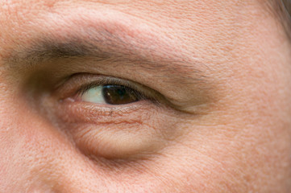
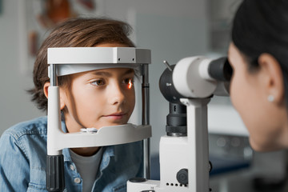
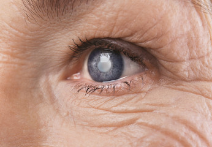
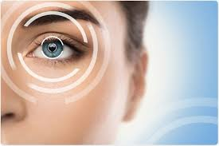
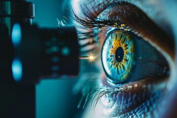

Cataract Treatment
We are widely recognized for excellence in providing cataract treatment & surgery. With successful cataract treatment, your vision will be clearer, brighter, and sharper just like before.
Enquire Now
Cornea Treatment
Keratitis is a medical term for inflammation of the cornea. Symptoms include rapid onset of pain, redness, itching, blurred vision, tearing, and sensitivity to light.
Enquire Now
Glaucoma Treatment
Glaucoma treatment often starts with prescription eye drops. Some decrease eye pressure by improving fluid drainage, while others reduce fluid production.
Enquire Now
Refractive Surgery
Refractive surgery corrects the refractive error (spectacle power) of the eye. It reduces dependence on glasses and contact lenses.
Enquire Now
Retina Treatment
Laser surgery can repair a retinal tear or hole. It creates scarring that binds the retina to the underlying tissue.
Enquire Now
Paediatric Ophthalmology
A children's eye doctor diagnoses, prevents, and treats diseases affecting children's eyes and vision.
Enquire Now
Oculoplasty Treatment
Oculoplastic procedures are surgeries done around the eyes, either for medical or cosmetic reasons.
Enquire Now
LASIK Surgery
LASIK uses an excimer laser to reshape the cornea, correcting refractive errors and reducing dependence on glasses.
Enquire Now